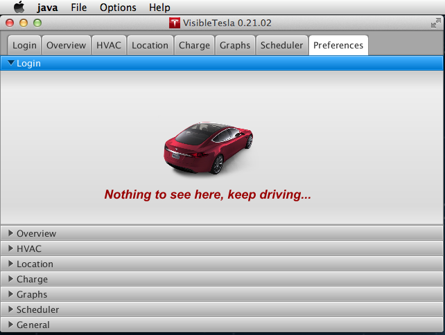

The Prefs Tab
The Preferences tab allows users to control various options for the application as a whole and individual tabs within the application. Each Tab in VisibleTesla has it's own section within the preferences tab. There are also general preferences for the app as a whole. To set the preferences associated with a given tab, click the arrow next to the Tab name. The screen shot below shows the Preferences tab with the Login preferences selected. As you can see, there are currently no preferences available for this tab.
The preferences associated with some tabs are split into two groups: Basic and Advanced. In general, you should avoid changing the advanced options. The most common preferences are shown in the table below.
| Preference | Description |
|---|---|
| Location Preferences | |
| Collect Location Data | Checking this box causes VisibleTesla to store location data that it collects from the Location Tab or the Graph Tab. This option is required is you want to use the Trips tab. |
| Seconds Between Stored Samples | Location data can come in quite rapidly when viewing the Locations tab. VisibleTesla doesn't store every single piece of data. You can specify the minimum time between samples using this slider. Note that this does not impact how frequently data comes into VisibleTesla. It only specifies how much data is stored. |
| Distance Between Stored Samples | Location data can come in quite rapidly when viewing the Locations tab. VisibleTesla doesn't store every single piece of data. You can specify the minimum distance between location samples using this slider. Note that this does not impact how frequently data comes into VisibleTesla. It only specifies how much data is stored. |
| Stream when possible | Checking this box tells VisibleTesla to stream location data opportunistically even when not on the Location Tab. When the car is not moving this will have no net effect. When the car is moving, additional location data will be captured. On very short trips or when the app is daydreaming, you may not see additional data. |
| Graphs Preferences | |
| Ignore Graph Gaps | Checking this box causes VisibleTesla treat gaps in graph data specially. In particular, lines will not be displayed when between points that are far apart indicating gaps in the data. |
| Minutes constituting a gap | Sets the threshold for how far apart points need to be to constitute a gap in the data. This can range from 10 minutes to an hour. |
| Scheduler Preferences | |
| "Safe" includes: | These checkboxes allow the user to determine what sorts of power safety checks should apply to commands in the Scheduler UI that may consume significant power. You may select Minimum Battery Power or Vehicle Plugged-In or both or neither. |
| General / Basic Preferences | |
| Wake on Tab change | Lets the user determine whether clicking on a tab should cause a refresh and consequently wake up the car if it is sleeping. If this box is unchecked, clicking on a tab while in sleep mode will not refresh the data (meaning it will be stale). This allows the user to look at the last data displayed in a tab without waking the car up. |
| Idle Threshold | Allows the user to set the Idle Threshold. This determines how long VisibleTesla will look for inactivity before entering Sleep or Daydream mode. The default is 15 minutes. It can be set to anywhere between 1 and 90 minutes. |
| Load data for | Controls how much data should be loaded. You can load the last 7, 14, or 30 days, the last week, the last month, all of your data, or none of your data. If you select to load none of your data, the graph will start out empty and add data points as usual. Normally this preference will be honored the next time VisibleTesla is launched. Changing this preference will not cause existing graph data to reload. However, if you change this preference before going to the Graphs tab, it will be honored immediately. |
| Email for notifications | This is the email address to which all notifications will be sent. This includes the Unplugged? command in the Scheduler Tab. |
There are also a set of advanced preferences that most users should never have to use. You can safely ignore these unless you run into one of the few cases that lead you here.
| Preference | Description |
|---|---|
| General / Advanced Preferences | |
| Enable Proxy | Allows the user to specify an HTTP proxy (not SOCKS) to be used for all operations. To use this feature, check the "Enable Proxy" checkbox and fill in valid settings for "Proxy Host" and "Proxy Port". Your network administrator will provide these settings to you. You must quit and restart VisibleTesla for these settings to take effect. |
| Offer Experimental Versions | If this box is checked, the app will offer experimental versions as part of the normal process of checking for updates. The box is not checked by default. If an experimental version is available and this box is not checked, it will not be offered to the user. |
| Use custom Google API key | If you are not a Google Maps developer, please ignore this option. Using this options provides no new functionality. If you are a developer with a valid API key issued by Google, you may enter it here and it will be used by the application instead of the default key. This may provide you with higher usage limits on Google Maps related actions. If you check this box and supply an invalid key, the Location tab and the Trips tab will fail without notice. If you are a developer and want to learn more about the Google Maps API and how to get a key, please refer to Google's documentation. |
| Use custom MailGun key | Advanced users may supply their own API key for MailGun. This is the service used to send notifications via email. It is up to you to set up an account with MailGun and agree to their terms of service. Supplying your own key provides no new functionality. It does, however, provide better privacy and may help to avoid usage limits. If you don't supply your own key, a default account is used and logging information is available to the author of VisibleTesla who administers the account. Please do not use this setting unless you are comfortable acquiring your own MailGun key. |
| Font Scale | Users who are experiencing problems with fonts being too large and not displaying properly may use the new Font Scale setting to adjust the font size. Set the font scale to a value lower than 100% to reduce VisibleTesla's font size. Some experimentation may be necessary to find the right scaling. You must quit and restart VisibleTesla before the setting will take effect. |
| Enable REST Services |
VisibleTesla makes very limited functionality available via web services. Please read about it in the Other Topics documentation. These services are turned off by default. There are three preference settings:
|
| Show App Files | VisibleTesla stores its data files in a location appropriate to the platform. This location differs between Mac, Linux, and Windows. In normal operation you should never need to know or care where these files are. The only time you might care is if you encounter a problem. In that case, the files stored in this folder may help in finding the problem. Pressing the Show App Files button will take you to these files. |